Roundnet
Športové cesty s roundnetom pre kluby a tímy, vrátane našej vlastnej cesty FRESH na Malorku.
Viac o roundneteCestovná kancelária od roku 1994
Roundnet a potápanie pre kluby, tímy a športové komunity. Vy riešite šport, my všetko ostatné.
Aktívne cesty
Športové cesty s roundnetom pre kluby a tímy, vrátane našej vlastnej cesty FRESH na Malorku.
Viac o roundnetePotápačské cesty pre skupiny. Loď alebo potápačské centrum, ubytovanie a transfery vybavíme za vás, pri výbere letov poradíme.
Viac o potápaníCesty na mieru
Poviete nám termín, počet ľudí a čo potrebujete. Pripravíme ponuku a postaráme sa o všetko od hotela po posledný transfer.
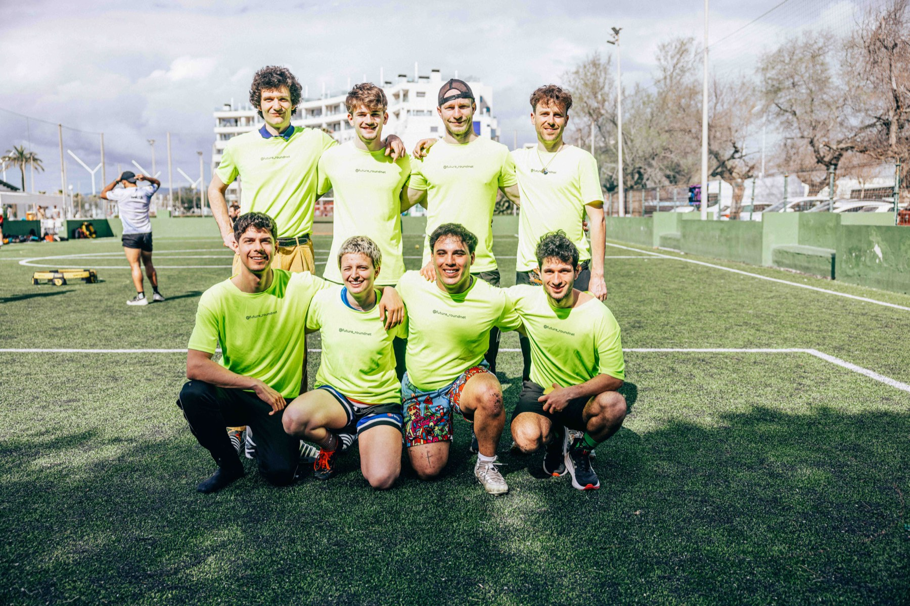
01
Vyberieme hotel podľa veľkosti skupiny, dohodneme cenu a zarezervujeme izby.
02
Tréningové plochy na roundnet, potápačské centrum alebo loď, k tomu výlety počas pobytu.
03
Letiskové transfery aj doprava na mieste počas celého pobytu. Skupina nemusí nič riešiť sama.
Destinácie
Naša domáca destinácia. Hotely pri pláži, tréningové plochy a počasie, ktoré sa hodí na jarný pobyt. Poznáme tam hotely aj ľudí.
Pobrežie s veľmi dobrým pomerom ceny a kvality. Vhodné pre väčšie skupiny, ktoré chcú pobyt pri mori bez vysokého rozpočtu.
Ak máte na mysli iné miesto, napíšte nám. Vieme pripraviť pobyt aj v destinácii, ktorú si vyberiete vy.
Vlastná cesta
FRESH je športová cesta na Malorku, ktorú organizujeme pod vlastnou značkou Future Roundnet. Posledná sa konala 8. až 15. marca 2026 v hoteli Fontanellas Playa. Súčasťou bol aj organizovaný výlet do Sólleru vlastným autobusom.
Práve preto vieme, kde skupinové cesty zvyknú zlyhať. Zažili sme to na vlastnej koži.
Najbližší termín: FRESH 27, 7. až 15. marca 2027, Malorka.
Prihláška na FRESH 27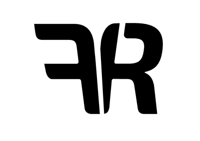
futureroundnet.com →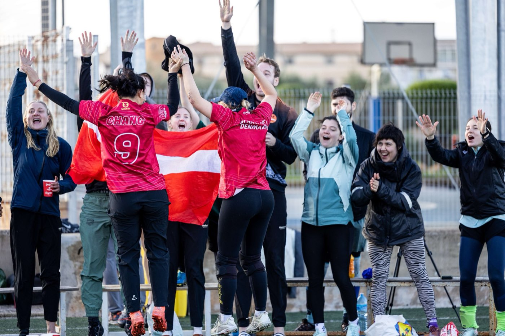
Roundnet
Na FRESH sa hrá roundnet. Dva tímy po dvoch hráčoch stoja okolo malej okrúhlej siete pri zemi. Loptičku treba odraziť do siete tak, aby ju súper nevrátil.
Galéria
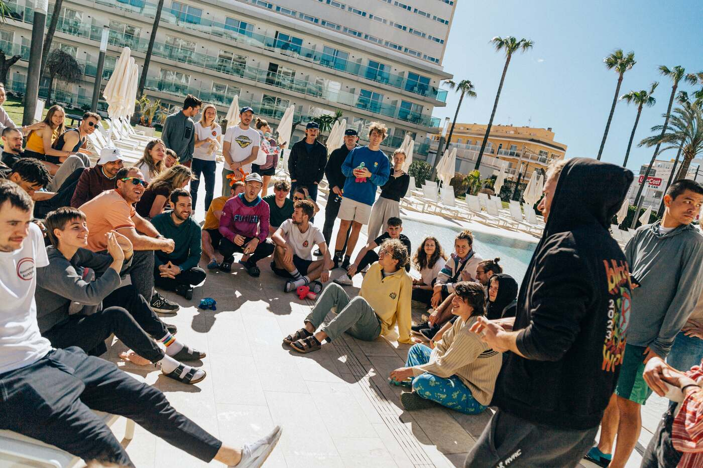
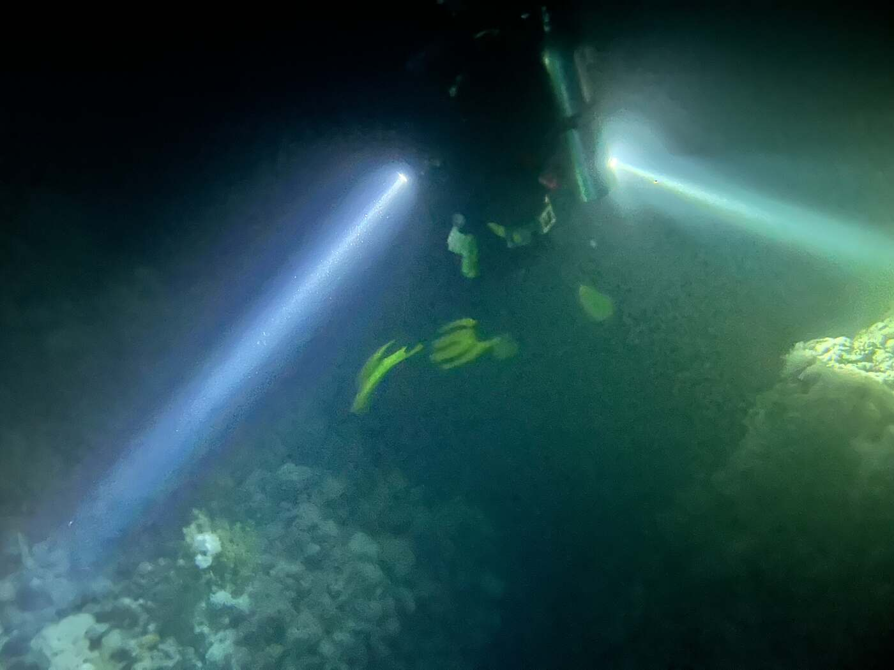
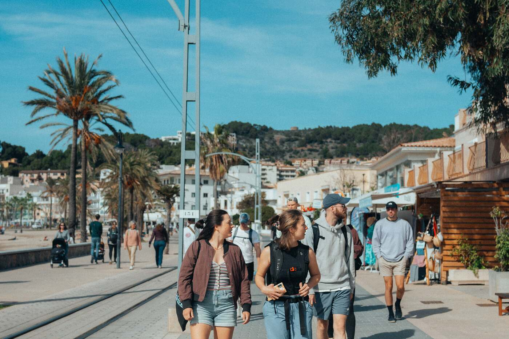
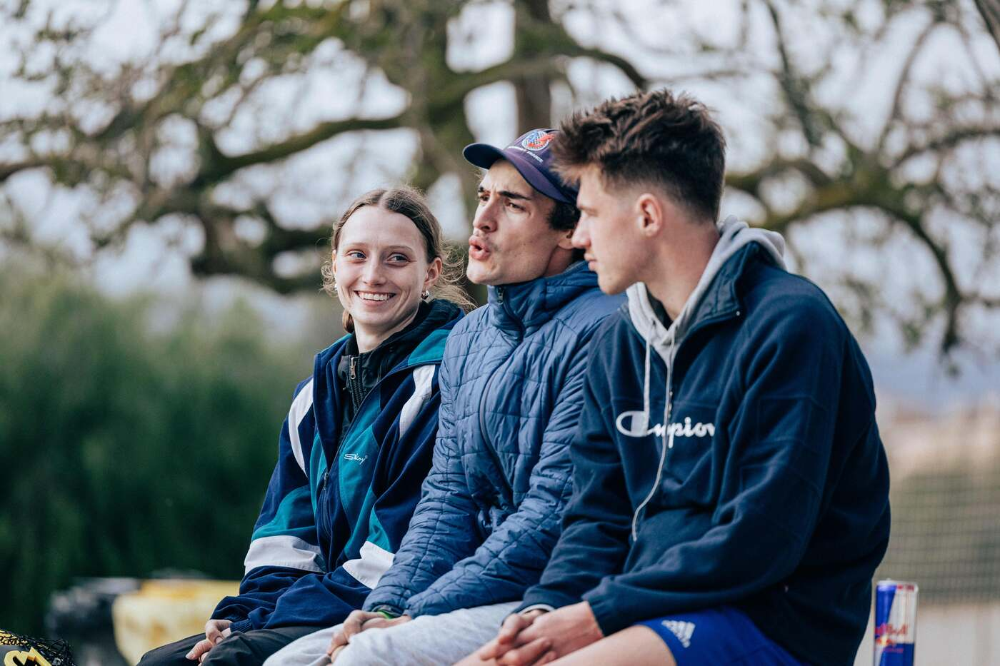
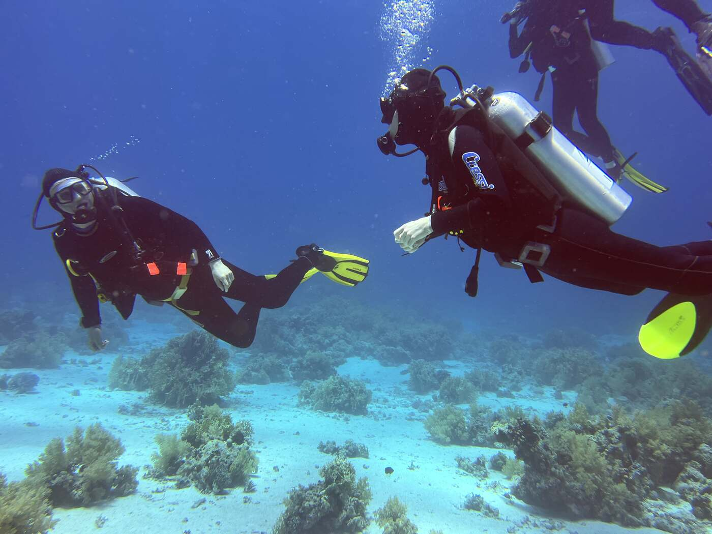
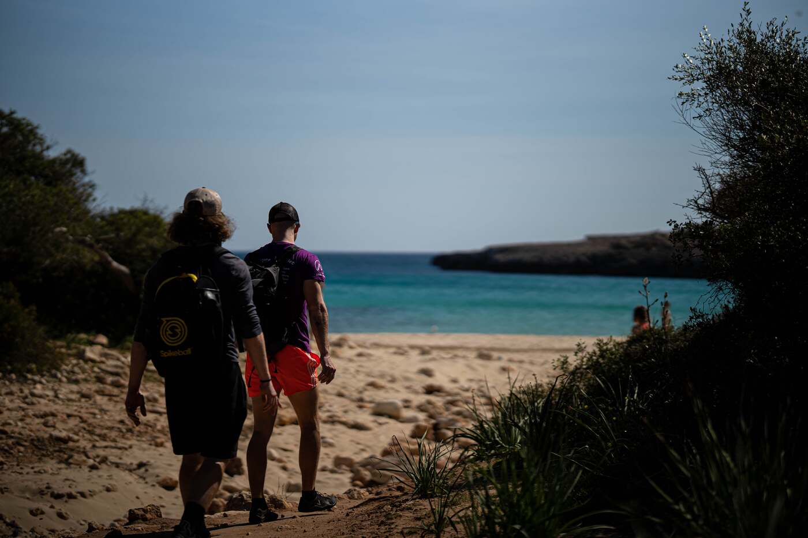
Potápanie
Loď alebo potápačské centrum, ubytovanie a transfery vybavíme rovnako ako pri našich roundnetových cestách. Pri výbere letov poradíme.
Za potápaním v REAL TEAM stojí Jakub, PADI Divemaster od roku 2022.
Chcete vedieť viac? Napíšte nám a pošleme vám podrobnosti.
Napísať e-mail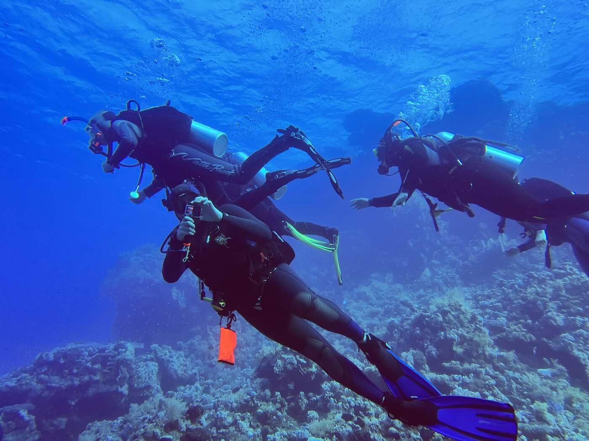
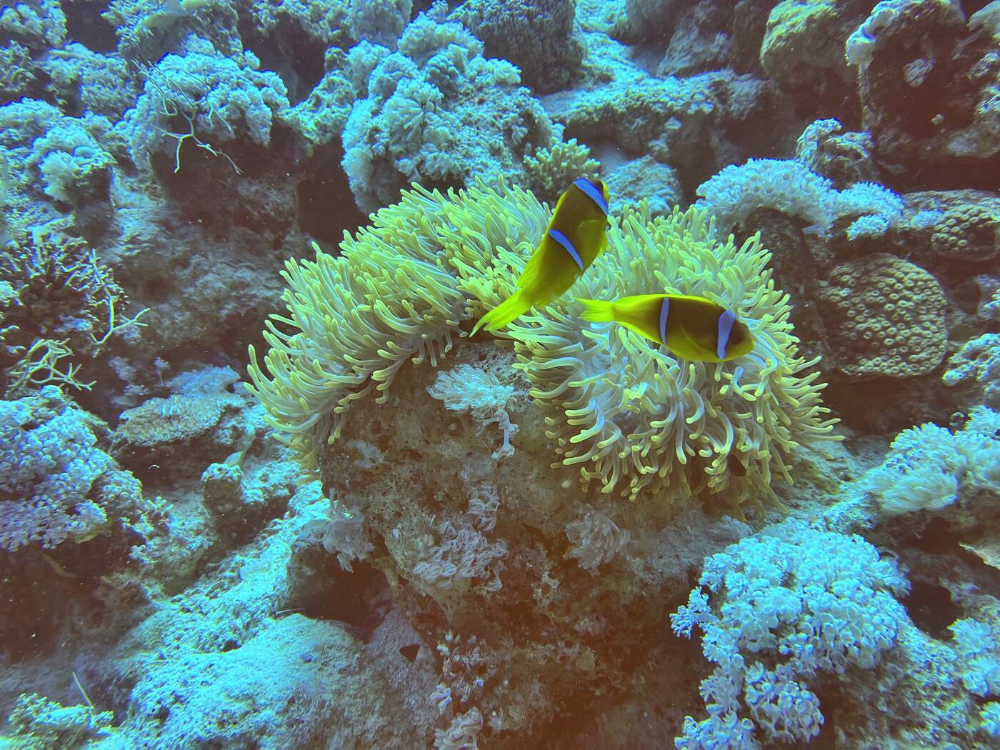
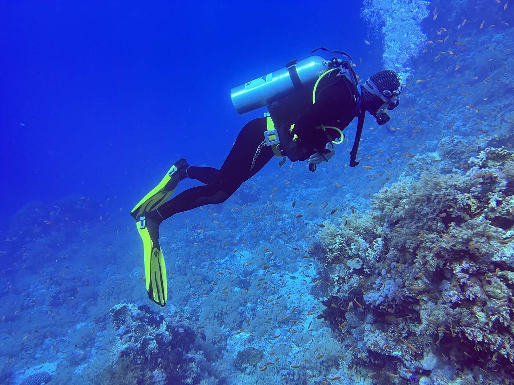
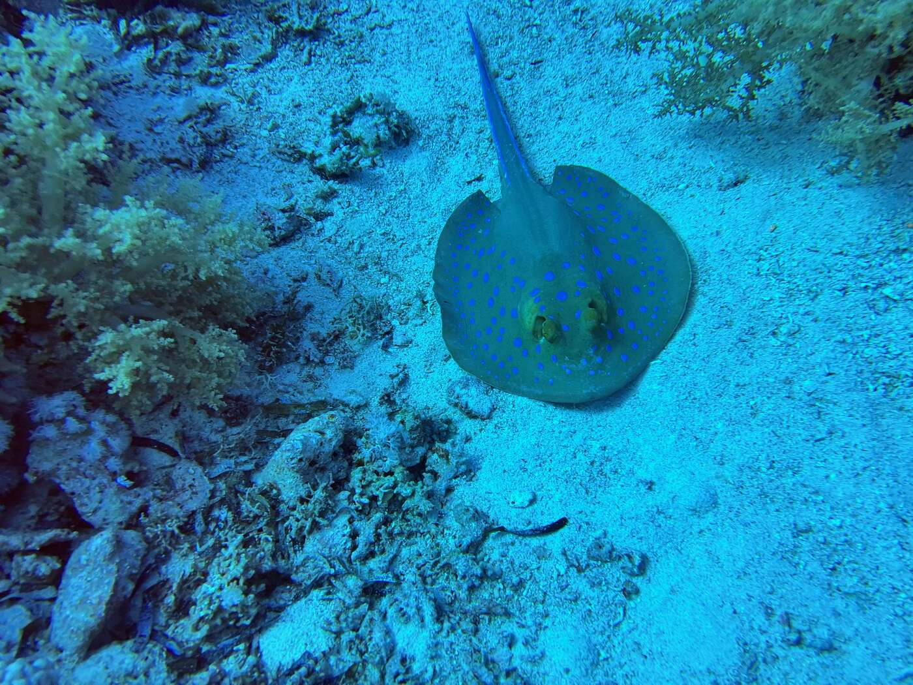
Zábery z našich ponorov
Otázky a odpovede
Pre kluby, tímy a športové komunity. Poviete nám termín, počet ľudí a čo potrebujete, my pripravíme ponuku a postaráme sa o pobyt.
Ubytovanie, letiskové transfery a dopravu na mieste, tréningové plochy na roundnet, potápačské centrum alebo loď, k tomu výlety počas pobytu.
Naše hlavné destinácie sú Malorka a Albánsko. Pobyt vieme pripraviť aj v inej destinácii, ktorú si vyberiete.
Áno. REAL TEAM, s.r.o., IČO 31 369 049, so sídlom Pri kríži 18, 841 02 Bratislava, pôsobí ako cestovná kancelária s licenciou od roku 1994.
Máme uzatvorené poistenie pre prípad úpadku cestovnej kancelárie podľa zákona č. 170/2018 Z. z. v Union poisťovni, a.s. Číslo poistnej zmluvy aj rozsah krytia nájdete v právnych informáciách.
Naša vlastná športová cesta na Malorku pod značkou Future Roundnet. Posledná sa konala 8. až 15. marca 2026 v hoteli Fontanellas Playa. Najbližší termín je FRESH 27 od 7. do 15. marca 2027 na Malorke.
Áno. Okrem roundnetu ponúkame aj potápačské cesty pre skupiny. Napíšte na jakub@realteamsport.eu a pošleme vám podrobnosti.
Vyplňte formulár nižšie alebo napíšte na jakub@realteamsport.eu. Stačí počet ľudí, približný termín a destinácia.
O mne
Volám sa Jakub Popluhár a REAL TEAM je moja firma. Som vyštudovaný učiteľ telesnej výchovy a bývalý reprezentant Slovenska vo florbale. Roundnet som hrával na vysokej úrovni. Som aj PADI Divemaster a skáčem padákom. Precestoval som 50 krajín sveta.
Cestovný ruch poznám aj z druhej strany pultu: pracoval som pre TUI Magic Life, Lebenslust Touristik a SegTour München. Viem teda, ako sa taký pobyt pripravuje, aj čo sa na ňom dá pokaziť.
Šport a cestovanie u mňa vždy išli spolu a presne to prinášam do REAL TEAM.
Ponuka
Stačí počet ľudí, približný termín a cieľ cesty. Ozveme sa s konkrétnou ponukou.
REAL TEAM, s.r.o. · cestovná kancelária s licenciou od roku 1994 · poistenie pre prípad úpadku: Union poisťovňa · Právne informácie
Alebo priamo e-mailom: jakub@realteamsport.eu